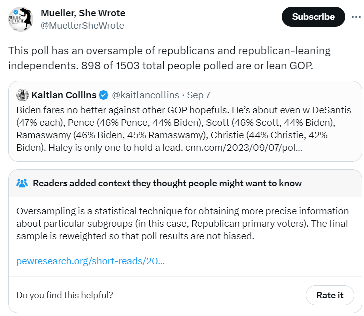
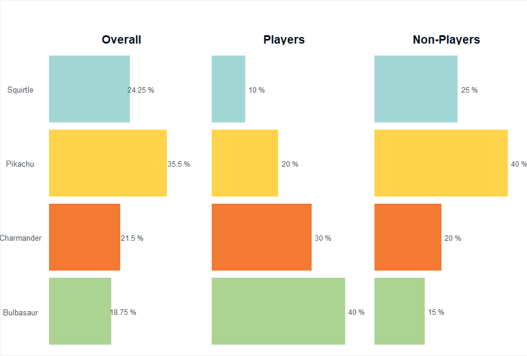
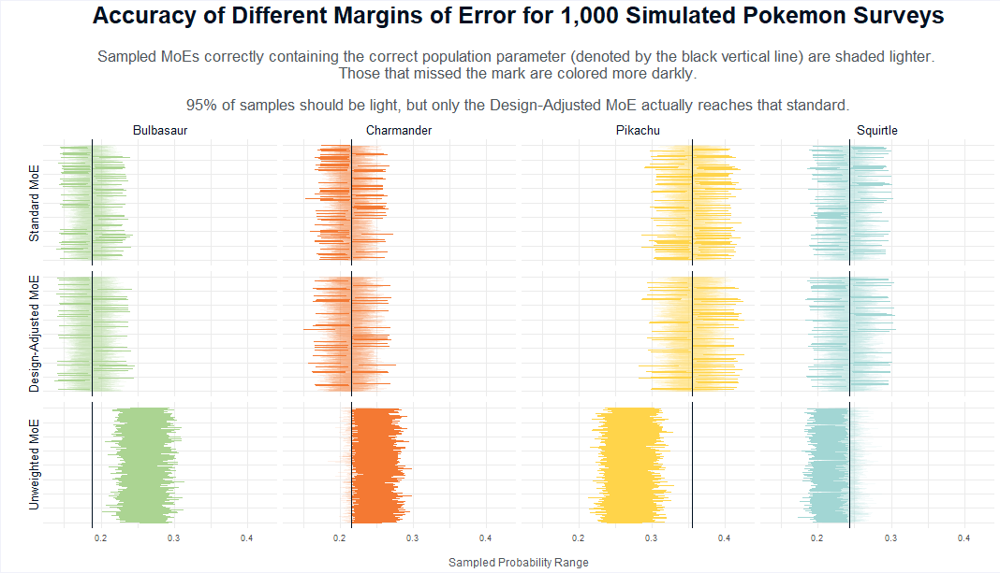

The Traditional Margin of Error When You Have Oversamples in Your Survey is Wrong
Illustrated using Pokemon
Peter Licari ![]()
Oversampling and (Margins of) Error
Not too long ago, pollsters and social scientists on X (the decaying husk of Twitter) found themselves discussing a recent CNN poll detailing President Biden’s job performance and people’s attitudes towards participating in the 2024 election if it involved a 2020 Trump v. Biden rematch. Not because there was anything wrong with the poll itself, but because a prominent anti-Trump account questioned whether or not the insights were valid because the poll included an oversample of Republicans and Republican-leaning independents.

As noted by the community post appended to the original missive, oversampling is a pretty common survey stats technique that allows researchers to drill into subpopulations that are otherwise too small in normal survey samples for reliable description. Oversampling involves deliberately sampling individuals from certain subpopulations and then weighting their contribution to the overall results in the topline values reflect their true proportion of the population. If done right, it allows for more accurate estimates at the topline and subgroup levels.
The kicker, of course, is “if done right.” I read a lot of polls. Oversamples are a pretty common technique. But one thing that I notice that happens pretty frequently is that those who employ oversamples are not properly adjusting the margins of error to reflect the fact that there is an oversample. (Though not with the CNN poll in question, all signs point to them doing everything right). When you have an oversample, your margin of error cannot be based upon the total size of your sample alone. Doing that will make your margins of error too small for them to have the statistical properties that they’re purported to have.
So this post serves two purposes. The first is to show that oversampling is a completely valid thing to do so long as you weight your sample properly. But, critically, also if you adjust your Margins of Error properly too.
Before getting into why the “standard” Margin of Error (MoE) is wrong in this context, let’s first discuss what the MoE is supposed to mean, anyhow.
What even is the Margin of Error anyways?
There’s only one way to guarantee that you have everyone’s preferences “correctly measured:” Gather every person in your population of interest and then ask them your question1. But that’s practically impossible once your population gets large enough. Instead, you can randomly select a subset of individual members from the overall population and, provided you sample a decent number of them, you can get an estimate that is decently close to the Truth. But, alas, because it is just a sample, we still expect there to be some deviation away from the true values expressed in the population.
The margin of error reflects our expectations for how far off from the mark we might be given the number of people we’ve sampled and the proportions we’ve observed. It constructs an interval such that, if you were to sample the same number of people from the same population infinitely many times, some large percentage of these intervals (usually 95%2) will contain, somewhere within them, the true population value. The margin of error reflects half the span of the confidence interval. (Hence why you’ll see them presented with a plus/minus sign). So an MoE of 3 percentage points on an estimate of 50% creates a confidence interval spanning 47%–53%. 95% of similarly constructed intervals contain, somwhere within it, the true population value. In practice, the size of this range reflects our uncertainty about the specific population proportions that we’ve observed in the sample.
To explain the above another way: Let’s say that you have a basketball that you want to get into a hoop. The ball is your population parameter. The catch: the ball is somewhere in a dark gym. You don’t know where. But you have to get it into a hoop to score points, lack of knowledge be damned. So you decide to construct a hoop large enough such that, 95% of the time that you chuck it, the ball will make it in. The hoop is your confidence interval.
The “classic” margin of error formula for proportions relies on two figures: The sample proportion in question and the number of observations. From a purely statistical standpoint, the MoE shrinks as you get a larger sample (though with diminishing returns). Additionally, proportions further away from 50% have smaller MoEs than those closer to 50%. However, in practice, most polling outfits and news articles about surveys report the MoE assuming a proportion of 50% because that’s the most “conservative” estimate.3 The way it’s often reported, it’ll vary purely as a function of sample size.
Here’s the thing, though: When a survey includes an oversample, the MoE that’s (too) frequently reported out is based upon the full sample of individuals. So if there’s a sample of 1,000 people and they oversampled an additional 500 people, they’ll report out an MoE of about 2.5% based upon the total 1500 people sampled. But that isn’t correct. Doing so makes the MoE they report out smaller than it actually is. They are not properly conveying their uncertainty about the point estimate that they’re reporting out on.
I think that this sort of mistake is inadvertent. Doing surveys is hard. None of us are perfect, we can only hope to get better. It’s one thing to be told this by someone on the internet, but I hope to demonstrate it in a way that sticks. So let’s go through a simulation on something objectively way more interesting than the 2024 Presidential election: Pokemon characters!
Illustration through simulation
Scenario
Let’s say that we are surveying some population of people with two sub-groups and we’re asking them about their favorite classic Pokemon starter plus Pikachu—because when you’re big enough to get your own balloon in the Thanksgiving Day parade, you get special privileges. So that brings us to four total: Charmander, Bulbasaur, Squirtle, and Pikachu. For the sake of this example, let’s say subgroup one are the folks who have played Pokemon and reflect 15% of the population. Among players, let’s imagine 40% choose Bulbasaur, 30% choose Charmander, 20% choose Squirtle, and 10% choose Pikachu4. Subgroup 2 reflects non-players and constitutes 85% of the population. 40% of these people choose Pikachu, 20% choose Charmander, 25% choose Squirtle, and 15% choose Bulbasaur. Among the full population then, 18.75% choose Bulbasaur, 24.25% choose Squirtle, 35.5% choose Pikachu, and 21.5% choose Charmander.

Creating the Data
Let’s go ahead and simulate this population. I’ll be doing this in R (R version 4.2.2 (2022-10-31 ucrt)). I’m making it a total population of 10,000,000. The first part of the code chunk creates a dataframe that we’ll be using to sample from. The with_seed function comes from the {withr} package; I want to keep this reproducible on my machine since I’ll be using random sampling. The second part uses the {summarytools} package to make cross-tabs to illustrate that the data set construction worked as intended.
Show the code
suppressPackageStartupMessages(library(tidyverse))
suppressPackageStartupMessages(library(summarytools))
suppressPackageStartupMessages(library(withr))
suppressPackageStartupMessages(library(questionr))
with_seed(13, {
players <-
tibble(
type = "Player",
preference = sample(
c("Bulbasaur", "Charmander", "Squirtle", "Pikachu"),
prob = c(.40, .30, .20, .10),
size = 1500000,
replace = TRUE
))
non_players <-
tibble(
type = "Non Player",
preference = sample(
c("Bulbasaur", "Charmander", "Squirtle", "Pikachu"),
prob = c(.15, .20, .25, .40),
size = 8500000,
replace = TRUE
))
full <- rbind(players, non_players)
full <- full %>%
dplyr::mutate(pop_id = row_number())
})
ctable(full$preference, full$type, prop = 'c')Cross-Tabulation, Column Proportions
preference * type
Data Frame: full
------------ ------ ------------------ ------------------ -------------------
type Non Player Player Total
preference
Bulbasaur 1276579 ( 15.0%) 599477 ( 40.0%) 1876056 ( 18.8%)
Charmander 1700113 ( 20.0%) 450589 ( 30.0%) 2150702 ( 21.5%)
Pikachu 3399748 ( 40.0%) 149398 ( 10.0%) 3549146 ( 35.5%)
Squirtle 2123560 ( 25.0%) 300536 ( 20.0%) 2424096 ( 24.2%)
Total 8500000 (100.0%) 1500000 (100.0%) 10000000 (100.0%)
------------ ------ ------------------ ------------------ -------------------Looks like this worked great! The subgroup proportions and the overall group proportions are where we expect them to be.
Sampling
Now let’s say that we’re going to sample 1,000 respondents from this population. But! We’d like to also do analyses of Players as a subgroup. We’d only expect to get about 150 people, which isn’t nothing but it’s not a whole lot either. So we’ll oversample an additional 500 game players for a total of 1,500 people. We’ll then weight respondents in our sample so that the overall values are unaffected.
Show the code
## Main 1,000 sample
main_sample <- full %>%
sample_n(1000)
main_sample_ids <- main_sample$pop_id # Ids of those sampled
## Oversample of 500
oversample <- full %>%
filter(type %in% "Player") %>%
filter(!pop_id %in% main_sample_ids) %>% #no double sampling!
sample_n(500)
## Full sample
full_sample <- rbind(main_sample, oversample)
## Calculating weights
weights_df <- full_sample %>%
count(type) %>%
mutate(weight_prop = ifelse(type %in% "Player",.15,.85)) %>%
mutate(weight = (weight_prop * 1500)/n) %>%
select(type, weight)
full_sample <- left_join(full_sample, weights_df, by = "type")Looking at the table below, which compares the weighted versus non-weighted and the actual population proportions, we can see that the weighting does its job; it brought the actual topline values to be far closer to the actual population values than the unweighted version did. Incidentally this shows why you should always downweight your oversample—otherwise, your overall values will be off by a lot more!
preference | Pop Values | Unweighted | Weighted |
|---|---|---|---|
Bulbasaur | 0.1876056 | 0.2440000 | 0.1755069 |
Charmander | 0.2150702 | 0.2666667 | 0.2249455 |
Pikachu | 0.3549146 | 0.2546667 | 0.3345803 |
Squirtle | 0.2424096 | 0.2346667 | 0.2649673 |
But the question isn’t whether downweighting an oversample gets us back in the right ballpark. It’s whether or not the purported MoE from the full 1,500 people is correct. If it is, we’d expect that, should this sample be conducted an arbitrarily large umber of times, 95% of those confidence intervals will contain the true population value.
Simulating 1,000 Pokemon Preference Surveys
Computers may be amazing, but they can’t do something infinitely many times. But, just like with random sampling, doing something a bunch of times instead will get us in the right ball park.
So let’s conduct 1,000 samples of 1,500 from our full population data—1,000 people randomly selected from the full data (players and non-players alike) and then 500 randomly selected just amongst the 15% of people that are Pokemon players. We’ll then weight these respondents correctly such that the players won’t have an outsized influence on the topline results. I’ll report out on 3 different MoEs.
- The first assuming the oversample is included and not downweighted, calculated with the standard MoE.
- The second weighting the oversample properly, calculated with the standard MoE.
- The third weighting the oversample properly and calculating it with an MoE that takes the oversampling into account.
Given that these are 95% confidence intervals, we should expect approximately 95% of intervals to contain the true population value.
The chart below visualizes the results of the simulation. Each facet reflects a type of confidence interval (rows) and a Pokemon (column). The vertical bars reflect the MoEs for each of the 1,000 simulated samples. Their order up and down the Y axis is arbitrary, they happen to go bottom up from the first simulated run to the last. Moving horizontal on the X axis are smaller–larger proportions of the synthetic population. The black vertical lines reflect how popular those Pokemon truly are in our synthetic population. Horizontal lines that cross this gray reference line have successfully captured the population parameter. Those that miss have not accurately captured that Pokemon’s overall popularity in the sample. Since all of these are purportedly 95% confidence intervals, we would hope that they do so 95% of the time.
In short, the more solid lines we have, the worse we’re doing. And if we have more than 5% of sample that shows a solid line, then our MoE isn’t being constructed correctly.

Looking at the first section with the Standard MoE things appear to be okay. Indeed, if we were to just eyeball it one might think that we’re actually getting 95% coverage. But we’re not. It’s actually only 91.4%. The degree to which this “standard” MoE is wrong will depend on how much we have to weight the sample versus an ideal case of perfect random sampling. This is known as the weighting efficiency. It’s possible for this to be closer to 95%. But it’s also possible for it to be further away depending on how much your weights have to work to bring values in-line with your population targets.
In the second section, we’ve actually hit what we were aiming for. Here, we took the design of the sampling into account and were able to achieve 95% coverage. Right on the money5. In practice, design-effect adjusted MoEs are slightly elongated to account for the aforementioned weighting efficiency. I’ll leave the technical details about that for another post. But, for now, know that it is not only possible but necessary to adjust a survey’s MoE when it has an oversample in order to accurately convey one’s uncertainty about the point estimate.
Looking at the third row with the unweighted values, the coverage is absolutely abysmal. Only 25.2% of the confidence intervals contain the true population mean. And the only reason that it’s even this accurate is because Squirtle is about as popular with both players and non-players. Again, let it be said: ALLWAYS WEIGHT-IN YOUR OVERSAMPLES IF YOU’RE DOING TOPLINE VALUES.
In Sum
To be sure, misreporting the MoE for oversamples is not the most prominent survey-science sin. If anything, we shouldn’t be taking the MoE as reported as gospel anyhow. Those only reflect pure sampling error for random sampling—conditions that don’t actually exist in mainstream public opinion and survey research. There are other systematic biases that can creep into our instruments and analyses. Indeed, empirical research of surveys suggest that MoEs are actually only half as big as they’d need to be to contain the true population parameters 95% of the time6.
That’s not to say that polls are worthless, of course. Just that we as consumers need to know that, while still pretty good at tracking attitudes, they’re not perfect. And that we, as producers, need to do our due diligence in reporting our confidence in these estimates more accurately. And one easy way to do this is not to report “standard” margins of error when we’re dealing with headline data with oversamples.
Footnotes
It’s important to note that this would be a necessary step but not a sufficient step. Asking the right question—and in the right way—is a lot harder than most people give credit for. Drawing the correct conclusions from that is even harder. Yay epistemology and statistics!↩︎
Which is where we get the term “95% confidence intervals” from.↩︎
We’ll soon see that just because something is more “conservative,” it doesn’t mean it’s not wrong.↩︎
Look, unlike in the OG anime where Pikachu cheats by activating the sprinkler system, putting an electric type against an Onix is simply an easy way to get your ass handed to you.↩︎
Technically it’s 95.025 percent, but good enough for government work, right?↩︎
Though the degree of deviation is smaller when the design effects are taken into account. That said, empirically, it doesn’t shrink the deviation to zero. Because, again, there are other issues biasing poll results other than just sampling.↩︎
Reuse
Citation
@online{licari2023,
author = {Peter Licari},
title = {The {Traditional} {Margin} of {Error} {When} {You} {Have}
{Oversamples} in {Your} {Survey} Is {Wrong}},
date = {2023-09-13},
url = {www.peterlicari.com/posts/moe-subgroup-wrong},
langid = {en}
}